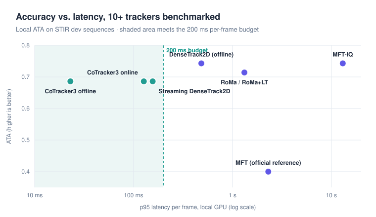
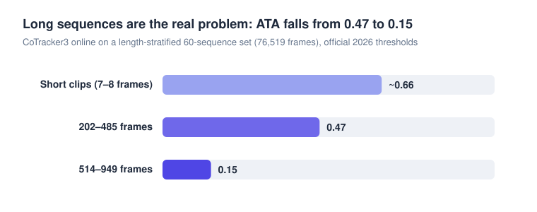

STIR Challenge 2026: surgical tissue tracking
MICCAI EndoVis · Team IIIT Allahabad · Python, PyTorch, Docker
Track points on wet, deforming tissue through laparoscopic surgery video, in 2D and 3D, one frame at a time and in under 200 ms per frame.
- Co-authored the 2D-track methodology report for our Track-On2 based submission.
- Benchmarked 10+ trackers (DenseTrack2D, CoTracker3, MFT, RoMa and more) with the official metrics code under the streaming budget.
- Built and tested correction layers for online tracking. A Kalman-predicted handoff matched an expensive re-anchoring gain at only +0.4% latency.
- Built a length-stratified 60-sequence evaluation set, which showed accuracy collapsing on long sequences, and a two-eye stereo pipeline.

| Tracker | ATA | p95 (local) | Frame by frame |
|---|---|---|---|
| DenseTrack2D (offline) | 0.743 | 485 ms | No |
| MFT-IQ | 0.743 | 13,028 ms | Too slow |
| CoTracker3 online | 0.686 | 127 ms | Yes |
| Streaming DenseTrack2D (mine) | 0.686 | 156 ms | Yes |
| MFT (official reference) | 0.400 | 2,303 ms | Too slow |

Local numbers on dev sequences, used to compare trackers with each other; they are not leaderboard scores.